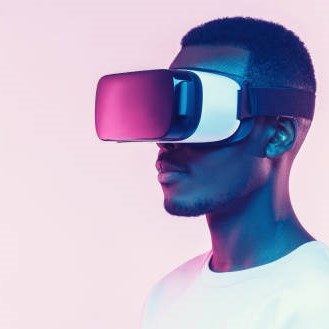

Въпреки че тази година пусна много нови VR очила и механика в света на VR, някои очила нямат тези функции.
1. Oculus quest 2 - VR очилате quest 2, направени от Oculus/Meta, са най-добрият избор за VR очила. Очилата бяха пуснати през 2021 г. и има нови игри, които се пускат почти всеки ден. Quest 2 си струва за цената, която продава сега, но няма функциите, които има quest pro.
2.Meta quest pro - Quest pro е най-новата VR слушалка, произведена от Meta и има най-новите функции като проследяване на цялото лице и 144hz дисплей при 1080p. Това е голяма стъпка в сравнение с Quest 2, но въпреки цената и активните потребители, Quest 2 все още печели с много. Ако имате парите да платите за него, това е най-добрият ви избор, но ако нямате, по-добре изберете мисия 2.
3.Valve Index - Valve index също е наистина добра слушалка, но няма пълните функции на quest pro. Има 75hz дисплей и все още изобразява в 1080p. Въпреки че имате по-широка колекция от игри, индексът изисква компютър, който може да поддържа VR. От quest pro и quest 2 това вероятно е последният избор на yopur, защото комплектът с индекс на клапата е 1079$ сам плюс компютър, който добавя още 1000$.